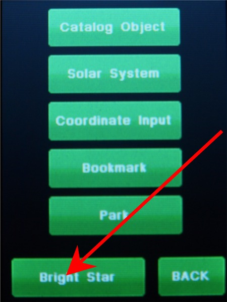

| Adding Stars to the Model - Manual method. |
|
This page show the steps to add one star to the Model and look at the
parameters using the manual method. There is also a semi-automatic method that you can use. |
|  |
1. Press the "Bright
Star at the bottom of the page. |